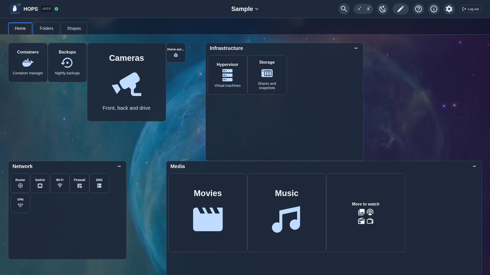
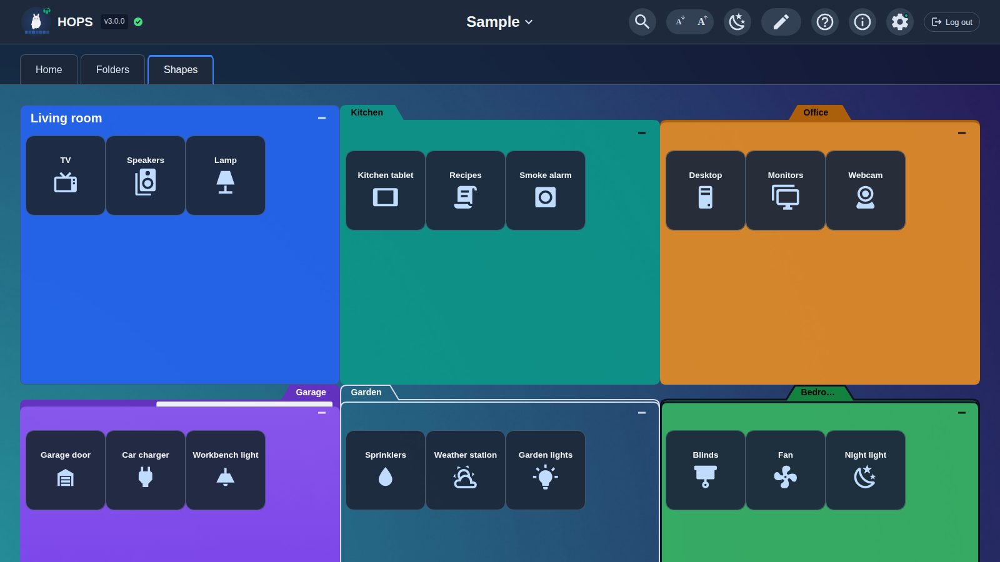
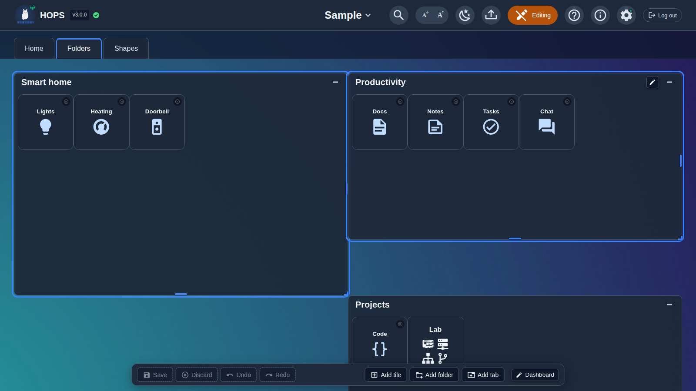
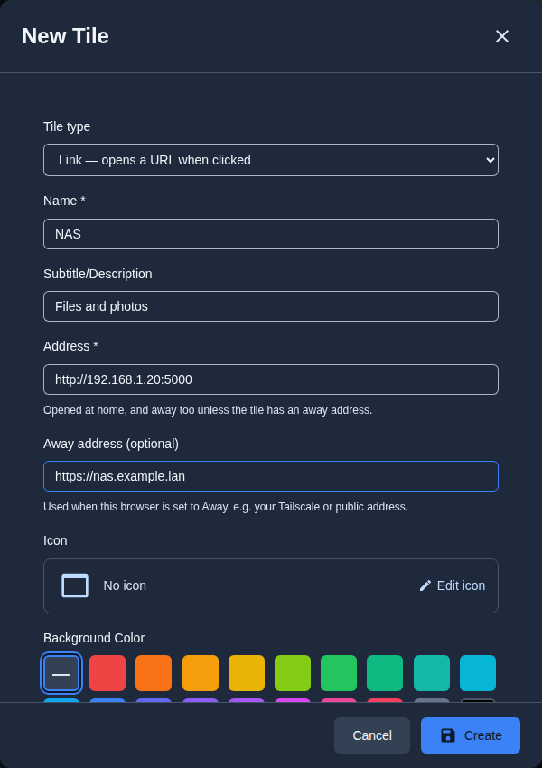
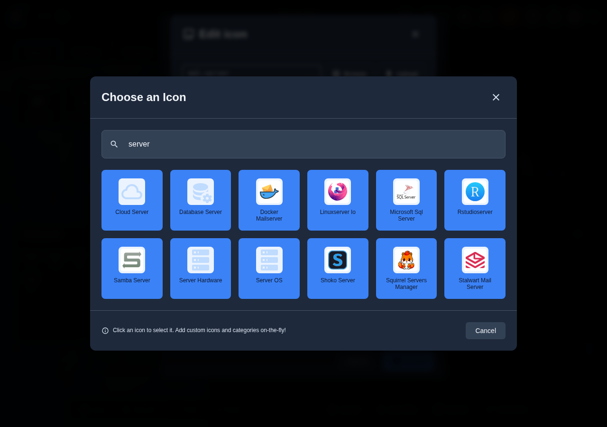
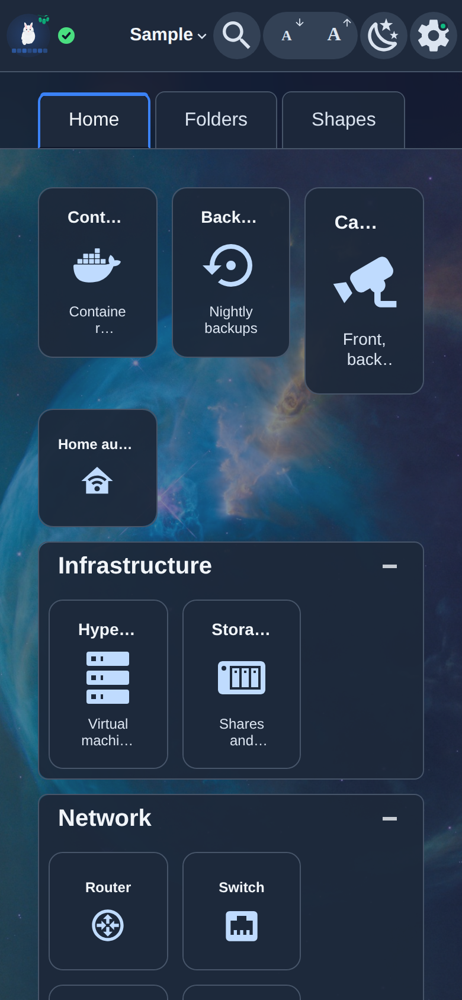
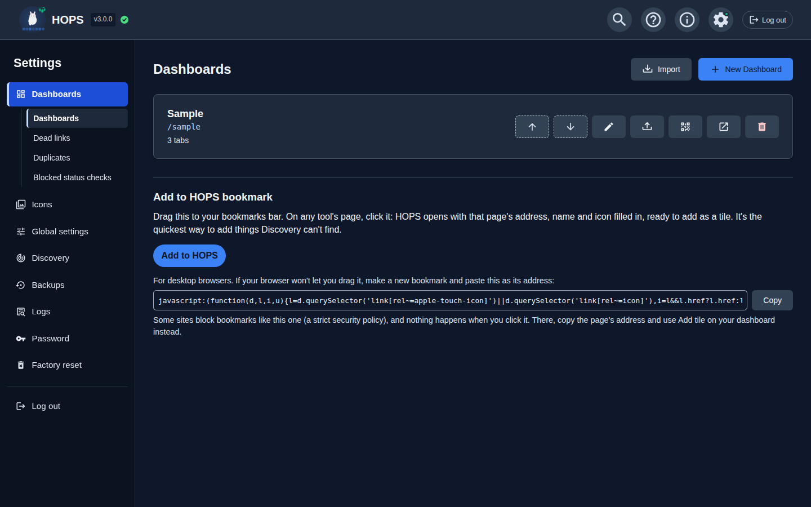
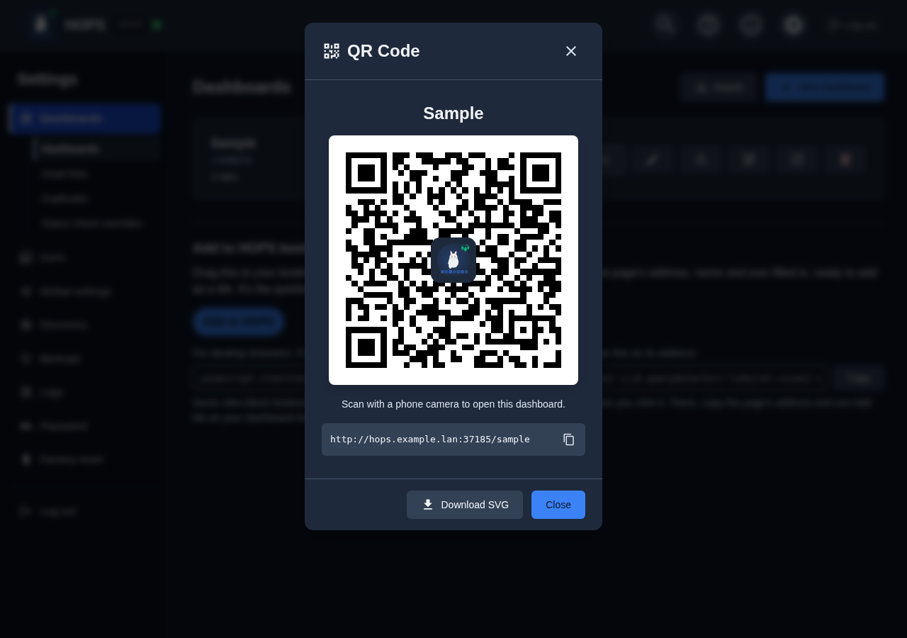
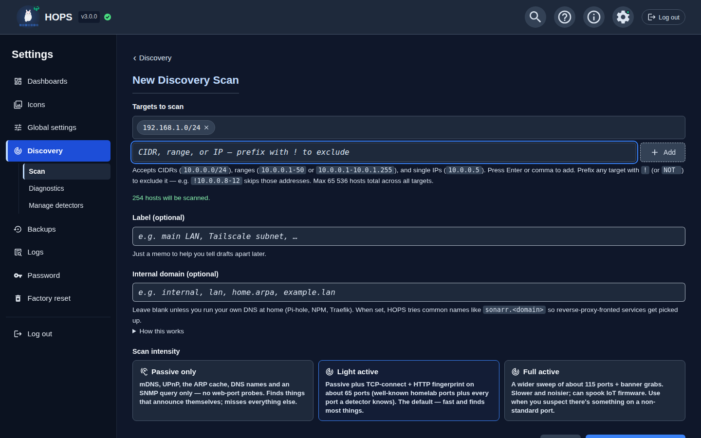

A homelab dashboard without the complexity.
HOPS is a self-hosted homepage for your homelab: tiles that open your router, NAS, Proxmox, media server and everything else you run. You build it by clicking and dragging in the browser, never in a config file. One program, its own database, nothing else to install.
Why HOPS?
There are already plenty of homelab dashboards out there. If you're happy with yours, stick with it. HOPS exists because none of them quite matched what I wanted: everything set in the GUI, a single file to install, and enough power to organise a big homelab without a config file in sight.
100% GUI configuration
Click, drag, configure. No YAML files. No JSON editing. No "simple" config files that inevitably become not-so-simple. Even the server settings (port, log level, backups, rate limits) live on the Settings page, not in env vars or flags.
Single binary
One executable plus a SQLite database, with the web interface built in. No runtime dependencies. Download, run, done. There's a one-line Linux installer, a Proxmox container script and Docker too.
Multiple dashboards
One install can host many dashboards at different addresses: /home, /network, /media. Each has its own tabs, background and look.
No login to view
Anyone on your network can open a dashboard. You sign in only to change things. Scan a dashboard's QR code to open it on a phone, or add it to the home screen.
Import your existing dashboard
Already on Homer, Dashy, or Heimdall? HOPS imports your existing setup and lists anything it couldn't bring across, so trying it doesn't mean starting over.
Search and keyboard nav
Press / to search the dashboard you're viewing, inside every folder, and see where a tile lives. Arrow keys move between tiles and Enter opens them.
What's new in v3
HOPS 3 is a big rework of how dashboards are laid out and edited. Upgrading from v2 is automatic.
Folders inside folders
Place tiles and folders anywhere on each tab's grid, in three sizes. A folder can hold tiles, other folders, or both. Folders page when they're full, can start minimised, and come in seven looks, from a rounded box to a cartoon folder, with the tab on the left, centre or right.
A new drag-and-drop editor
Drag things around, drop a tile on another to make a folder, Ctrl-click to select several, and right-click for Edit, Duplicate, Cut, Copy and Move/Copy to. Undo and redo every step. Nothing is kept until you click Save.
Home and away addresses
Give a tile an away address for Tailscale, a VPN or a public address. A Home / Away button in the top bar picks which one tiles open, in each browser on its own.
Your view, your browser
Minimised folders, folder pages, Home/Away, theme, text size and the optional Recently used row are remembered by each browser. Your phone and your desktop can differ, and nobody else's view changes.
Status checks, inherited
An up/down badge on each tile. Set checks to Inherit, On or Off on any tile, folder, tab or dashboard; the nearest setting wins. Self-signed HTTPS and login prompts count as up. One page lists every override and restores inheritance in bulk.
Add to HOPS
Drag the Add to HOPS bookmark to your browser's bar. On any service's page, click it, and HOPS opens with the address, name and icon filled in. Pick where it goes and click Add.
Dead links and duplicates
One page lists tiles whose status check has been failing for a while, with where they live. Another finds tiles that point at the same address and merges them on your say-so, showing exactly what it would keep and delete.
Network discovery
Point HOPS at your network and it finds what's already running: 90+ common services, including Pi-hole, Proxmox, Plex, the *arr apps, NAS UIs and AI tools. Each scan is a draft you tick through, and a re-scan shows what's new, changed and gone. It's a head start, not magic, so nothing lands on your dashboard until you accept it.
Backgrounds everywhere
A colour, a picture or a slideshow behind the dashboard, behind each tab, or inside a folder. About 90 built-in pictures work offline, or upload your own.
SSH and note tiles
An SSH tile opens your computer's SSH app at a host, port and user, and checks it with a TCP connect. A note tile holds a heading or a reminder, with no link.
Backups with retention
HOPS backs itself up when it starts, before every save, and before a restore, reset or upgrade. Choose how many to keep. Downloads include their images, a restore takes a safety backup first, and a failed backup always shows a warning.
Automatic upgrade from v2
On its first start, HOPS 3 takes a protected backup of your whole v2 database, then converts your dashboards. If the backup fails, it doesn't convert. The backup is never deleted automatically: it's your way back to 2.2.1.
Screenshots
All taken from the Sample dashboard that comes with every new install.









Install
Pick one. Then open http://<your-server>:8080 and sign in with admin / admin; HOPS makes you choose a new password straight away. The Quick Start guide walks through each option step by step.
One-line installer
Linux with systemd: Debian, Ubuntu, Raspberry Pi OS, a Proxmox container. Installs a service that starts on boot. Run it again to upgrade.
curl -fsSL https://github.com/weaversgrainthorpe/HOPS/releases/latest/download/install.sh | sudo bashProxmox VE container
In the Proxmox host shell. Creates a small Debian 12 container (1 core, 256 MB RAM, 2 GB disk by default) with HOPS in it.
curl -fsSLO https://github.com/weaversgrainthorpe/HOPS/releases/latest/download/hops-proxmox.sh
bash hops-proxmox.shDocker
x86-64 and 64-bit ARM. Save as docker-compose.yml, then run docker compose up -d.
services:
hops:
image: ghcr.io/weaversgrainthorpe/hops:latest
container_name: hops
ports:
- "8080:8080"
volumes:
- hops-data:/app/data
restart: unless-stopped
volumes:
hops-data:Single binary
Linux and macOS. Download the file for your machine from Releases and run it.
curl -LO https://github.com/weaversgrainthorpe/HOPS/releases/latest/download/hops-linux-amd64
chmod +x hops-linux-amd64
mkdir -p data
./hops-linux-amd64 --data ./dataWindows
PowerShell. The same single file; the Deployment guide shows how to run it as a service with NSSM.
curl.exe -LO https://github.com/weaversgrainthorpe/HOPS/releases/latest/download/hops-windows-amd64.exe
mkdir data
.\hops-windows-amd64.exe --data .\data- 64-bit only. 32-bit systems aren't supported, and the installer refuses them. The smallest Raspberry Pi HOPS runs on is a Zero 2 W with 64-bit Raspberry Pi OS; the original Pi Zero can't run a 64-bit OS.
- Tested on real machines: Linux (x86-64) and Windows. Not yet tried on real hardware: the Raspberry Pi / ARM64 build (run under emulation only) and the macOS builds. If you try one, please tell us how it went.
- Upgrading from HOPS 2? Start v3 with your existing data. It backs up your v2 database, then converts it. You don't need to export and import.
For services, reverse proxies, HTTPS, backups and rolling back, see the Deployment guide.